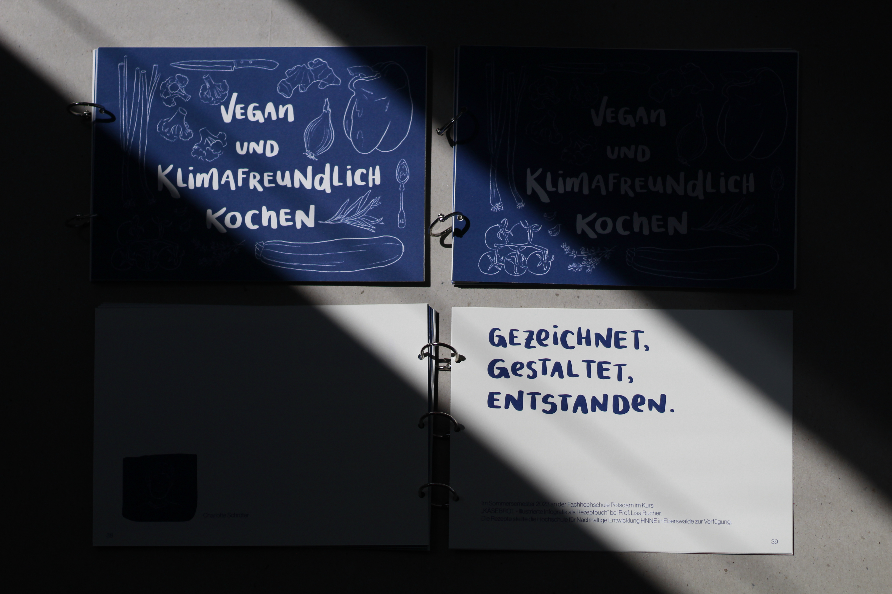

Vegan und klimafreundlich– dieses Kochbuch vereint beides und bietet mit 10 Rezepten einen einfachen Einstieg.
Die Lebensmittel, die wir konsumieren, verursachen in ihrem Anbau, ihrer Produktion, bei der Lagerung, beim Transport
und bei der Verpackung CO₂-Emissionen. Bei tierischen Produkte sind die Emissionen deutlich höher. Da große
Mengen an Futtermitteln angebaut werden müssen, um sicherzustellen, dass Tiere ausreichend Milch produzieren
und schnell wachsen, um Fleisch bereitzustellen. Der Anbau dieser Futtermittel benötigt viel Wasser und regelmäßig
werden große Waldflächen gerodet, damit ausreichend Anbaufläche zur Verfügung steht.
Pflanzliche Ernährung hingegen spart viele Ressourcen, da keine Futtermittel benötigt werden und oft auf lange
Transportwege verzichtet werden kann. So entsteht eine deutlich kürzere und direktere Wertschöpfungskette – ganz
ohne Tierleid. Deswegen war es mir wichtig, dass dieses Kochbuch vegane Rezepte beinhaltet. Es soll zeigen, wie
lecker vegane Gerichte sein können und dass es nicht schwer ist, Klassiker in eine vegane Version abzuwandeln.
Vegane Ernährung bedeutet eben kein Verzicht. Zusätzlich enthält das Kochbuch Infografiken zu klimafreundlicher
Küche und Informationen über Nährstoffen, um euch noch mehr Wissen zu vermitteln.
